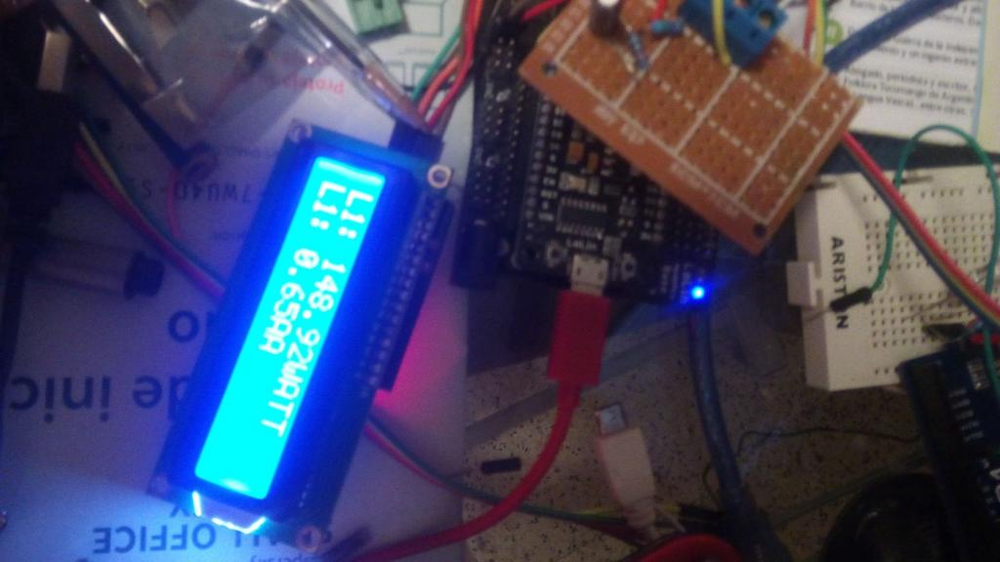

I want to monitor the heating system of one school, that is... i want to know when it turned on and when turned off. My system have one sct013 (30A 1V)... so no needing of burden resistor..., on the other hand, output voltage of esp8266 is only 3.3v, and max resolution of adc input is 1v... (that is, you can input 3 v, but beyond 1v you obtain max value: 1024 (10 bit ADC). So questions:
What must be values of resistence for dc biasing???
Is there any recomended values for capacitor??
Second question... i want to use emonlib library to calculate the power consumption every 2 minutes (total of watts consumed in this two minutes), and upload this data to thingspeak... i know how to obtain "instant watts", but doesnt know how to calculate "total watts in a time frame".
Thanks...
Re: ESP8266, emonlib and thingspeak
I cannot attempt to answer the first part of your question because I can find no useful information about an ESP8266 - especially I cannot find a mention of an analogue to digital converter.
On the second question, you seem to be confusing energy and power. Power is the rate at which energy is moved about. Energy is measured in Joules, 1 J = 1 Ws (Watt.second). Power is measured in Watts. 1 W = J/s (Joule per second). So "total watts in a time frame" is a meaningless concept. I think you mean Joules or a derivative or equivalent unit (kJ, MJ, Wh, kWh).
Do you really mean you want to calculate power every 2 minutes, or do you mean you want to calculate to total energy over the last 2 minutes and report that? If it is the second one, how accurate do you want to be? The original emonLib routines actually report the average power over (typically) 200 ms every 10 s, emonCMS then calculated the energy by assuming a linear interpolation between the power 10s ago and the power now. That gives a reasonably accurate result provided that the power does not fluctuate often. If power fluctuates a large amount and often, you need to look at the 'continuous' emonTx sketches. These calculate the energy per cycle and every 10s divide the energy accumulated by time to give the average power. I think your most accurate solution would be to follow that approach and calculate the energy over 2 minutes (but you would need to check carefully that the variables you used could handle the maximum numbers you expect).
Re: ESP8266, emonlib and thingspeak
Also I heard the internal ADC isn't very accurate. Don't know if this is true or false.
Maybe an I2C ADC could solve this?
ADS1115 16-Bit ADC - 4 Channel with Programmable Gain Amplifier or an ADS1015 12-Bit ADC - 4 Channel with Programmable Gain Amplifier.
Re: ESP8266, emonlib and thingspeak
Really not all versions of esp8266 have analog in, but esp12, esp7 and others yes.
Internal adc... is 10 bit resolution, not very accurate... especially because their voltage range is very short (from 0-1 V)... then ¿why i want to use this hardware?... To simplify installation, i don't need accurate, only need to know if heater is on or off (better: to know if heater pump is on or off), and send this data to thingspeak
Regarding the question of energy and power, yes my question was wrong.
What i want is to calculate the total energy over the last two minutes and report that, regarding accurate: really is a secondary question with little importance.
.
Re: ESP8266, emonlib and thingspeak
OK, now that I think I understand the real problem...
If the ADC input is 0-1 V scaled 0-1023, then if you're using a CT after the fashion of the emonTx, you need to bias the CT to a 'centre' voltage of 0.5 V, which will give you a maximum of 0.35 V rms. In terms of bias resistors, any pair with a ratio 5:1 will be OK. Without knowing how much current you can afford, 10 kΩ and 51 kΩ will give you 0.492 V which is close enough. And stay with the 10 μF capacitor.
Using your 30 A CT, the maximum you can measure will be 10 A, and the reliable minimum about 100 mA.
Then in the sketch, if you use emonLib and check every 10 s, you can decide whether the load is off (below the threshold) or on (above) and send that, or you can be clever and at the end of your 2 minutes, send an 'on' or 'off' based on the majority proportion of the time it was in whichever state.
Re: ESP8266, emonlib and thingspeak
Thanks!!!! First part of the question is fully solved :-))
Second part partially :-)) ... because i prefer to send not "on" or "off", with total watts i can deduct if only fuel pump is on, or fuel + water pump or only water pump (each one have different power), so i need to know the "sum" or
more correctly , the average of data to send each 2 minutes.
Re: ESP8266, emonlib and thingspeak
It seems to work
Sorry about the mess :-))

Re: ESP8266, emonlib and thingspeak
Please read "Adding a picture to a post". I assume there is a picture of some sort above, but I cannot see it. It is on a 3rd party site and it will be not at all helpful when at some future date it disappears from there. Attaching it here means that it will remain available.
Re: ESP8266, emonlib and thingspeak
Changed...now picture is in forum´s server
Re: ESP8266, emonlib and thingspeak
hi, do you you have the schematic and sketch for this anywhere? much appreciated :)
Re: ESP8266, emonlib and thingspeak
connections to ct: http://openenergymonitor.org/emon/buildingblocks/ct-sensors-interface
R1:R2: 10KR2:R1: 50K (47K)[Edited to correct mistake - RW]
C1: 10UF
I2C LCD: CONNECTED TO 5V (USB OUT PIN ON LOLIN) GRUND, D1 AND D2 (SDA AND SDCLK)
Sketch:
Re: ESP8266, emonlib and thingspeak
thank you very much for that.
it seems i have a 100A CT, so as far as i can tell that means adding a burden resistor, and this all thing did my head in.
do i power the ct from 3.3 or from 1v? do the voltage divider resitor values you chose mean that you are powering your ct from 1v dropped from 5v through the divider?
sorry for all the noobie questions
Re: ESP8266, emonlib and thingspeak
Assuming you have the same hardware as Helianto...
If you have a YHDC SCT-013-000, then you do need a burden resistor. The value depends on the maximum primary current you want to measure, and the maximum alternating voltage that your input can handle. If it is a 0 - 1 V dc input, that means approx. 0.333 V rms (giving you a margin of about 10% - and component tolerances will eat into that), and your CT provides 50 mA per 100 A of primary current. So choosing a silly number, if you want to measure 38 A rms maximum, your burden resistor (Ohm's Law) is 0.333 V / (38/100 * 50 mA) = 17.52 Ω. Always choose the next LOWER standard value, unless you want to reduce the maximum current that you can measure.
The standing direct voltage on the CT must be as close to 0.5 V as possible - see my post of Tue, 01/12/2015 - 17:05. If you have equal bias resistors, you need to feed the 'top' one from 1 V. If you have unequal ones, you choose the values to give you 0.5 V at their junction.
Re: ESP8266, emonlib and thingspeak
Thank you Robert. You explained it so well, it might have actually entered my thick skull.
Just to confirm, would this be ok for measuring ~38A using 3.3v power source and an analog pin limited to 1V?
Also, in heliantos sample, are the resistor values not reversed? Or am i missing something else...
Thank you very much
Re: ESP8266, emonlib and thingspeak
That looks OK, except that the CT plug is wired tip and sleeve, not ring and sleeve as you've drawn it.
The bias voltage is a bit high at 0.564 V, 680 Ω and 3.9 kΩ would be much closer at 0.49 V.
Of course, you've got to calculate your burden value to suit the current you have.
And you're right, Helianto has got his resistors the wrong way round. It's so obvious - to me (!) - which way round they should be that I didn't check to see what he'd written was correct (and it isn't).
Re: ESP8266, emonlib and thingspeak
I think that what is important is the relation between both values, not the position of each resistor ...perhaps i am wrong...
Re: ESP8266, emonlib and thingspeak
I've just edited my post above.
Re: ESP8266, emonlib and thingspeak
THank you very much Robert and helianto, I now understand all this a lot better.
Now to apply it and report back once i do :)
Thanks
Re: ESP8266, emonlib and thingspeak
And i have to review my system (perhaps resistors is placed wrong...)
Re: ESP8266, emonlib and thingspeak
Hi guys,
Thank you, I made it work on a NodeMCU. This board already has a voltage divider on the analog pin so it actually takes 0-3v3 and drops it to 0-1v. I guess that doubles any errors i might be seeing as well.
This is very very nice because we can build really really cheap internet connected current sensors.
I have an emonTx on the network as well, so i could use that to send voltage updates accross the network to the little sensors for more accuracy. Not perfect but it should be pretty good.
Now if i could only calibrate them all as i should... The three phase voltage reading is killing me.
When current is 0, what false current is expected to be seen by this? Currently seeing 0.7-0.10A with no load...
Re: ESP8266, emonlib and thingspeak
As far as i now nodemcu doesnt have analog divider on analog pin... another other question is accuracy... really is not usable for this use, 10 bits resolution, 1 v , and if you use a ct of 100A (i have three of them too), forget accuracy.
Re: ESP8266, emonlib and thingspeak
That is not good. We expect to see maybe 100 mA with the emonTx (scaled for 100 A input), but it is essentially random noise and translates to only a few watts of real power. A lot of trouble was taken with the design of the emonTx to reduce analogue noise, to minimise the interference from the digital circuits and to screen the analogue wiring.
My guess, and it is only a guess, is that it is digital noise from the digital circuits leaking into the analogue side. You could try decoupling the 3.3 V rail, and redesign your analogue input to give 3.3 V swing centred at 1.65 V, or maybe better still, remove the voltage divider if you've designed for 1 V centred on 0.5 V. That will not affect the noise, but it will increase the signal by 3.3 times, so effectively reduce the noise by that much.
Also, make sure you have a good solid GND connection on the analogue side.
Re: ESP8266, emonlib and thingspeak
helianto, don't make wild statements without justifying them. If you are measuring between 10 A and 100 A with a 100 A CT, you can expect the accuracy that the data sheet claims. If you are trying to measure below the specified minimum current of 10 A, in other words you are using the wrong tools for the job in hand, what do you expect?
Re: ESP8266, emonlib and thingspeak
Robert:
I have not explained well
With 100A CT can you obtain accuracy?... yes
With esp8266 can you obtain accuracy?... really not much... but enough for small Amps (i think)
With a 100ACT AND ESP8266 CAN YOU OBTAIN ACCURACY?... really not, there are too many factors against
Although I have achieved in my case acceptable reliability for low consumption (with 30A CT)
Re: ESP8266, emonlib and thingspeak
From what you have written, and from the questions that you have asked in this thread, I think I am right in saying that you have little or no understanding of electrical engineering.
What you are still saying: "With a 100ACT AND ESP8266 CAN YOU OBTAIN ACCURACY?... really not, there are too many factors against." is still a ridiculous claim because you do not say over what range of values you are trying to measure. If you check carefully, you should find plenty of discussion and hard facts about the levels of noise and accuracy that you can expect, both in theory and in practice.
A current transformer is inherently inaccurate at small currents, a certain amount of current is required to magnetise the core and that becomes a significant proportion of the total current when the primary current is small. Any standard electrical engineering textbook should cover CT theory. The answer to that is to choose a CT that is suitable for the range over which you want to measure.
Working over a sensible operating range, a 10-bit ADC can deliver good accuracy, but when the input amplitude falls to a few counts, it is hardly surprising that errors can increase dramatically. The answer to that is to operate the ADC over the range for which it is intended.
Re: ESP8266, emonlib and thingspeak
Little, for this reason i am here... to learn a little more :-))
What i am saying is: esp8266, 10 bits dac (really is not a big trouble), but their range really is a trouble because although it supports 3v... all values bigger than 1 v gives maximum result: so, for example:
0.5v....500
0.7v....700
1v...1024
1.5v..1024
3v....1024
If we add that we must convert the AC to DC signal ... seeking an average "0" value, and we only have a range of work of 1V, furthermore, the margin of error of a CT 100A in low workloads is greater than a CT of 20 or 30A...
In short , what I wanted to say is that esp8266 and CT 100A are not a good dance partner (usually, but in my case is enough for my needs).
Re: ESP8266, emonlib and thingspeak
Hi guys,
Let me start by saying I really know nothing about electrical engineering. I m just playing with this stuff and looking up to experts like you to gaing some additional understanding. Thank you.
In the meantime I have also ordered a 30A CT :)
Helianto: NodeMcu board does have a voltage divider on the analog pin https://raw.githubusercontent.com/nodemcu/nodemcu-devkit/master/Documents/NODEMCU_DEVKIT_SCH.png
Robert, i really did this as a working proof expermient, i need to calibrate it a lot more, after i understand it a lot better. Currently, as it is, i m passing through another voltage divider that on the board, before the analog port, which i am sure affects readings and noise quite a bit.
I have also realized i probably used the wrong burden, 33 instead of 23ohms
Whenever you can spare a moment, i ve got some more questions:
- in the test i ve done i went with 2 same value resistors and power from 3v3. The measured voltage at the intersection was not exactly 1.65, it was withing 0.02 volts i think, would this affect the emonlib calculations? Do i need to make sure the voltage is perfectly half? or in the case of 1v ref exactly 0.5v?
- if i understood correctly your posts above, in reality to measure 100A, at 1v, 10 bits, i really have got only 333 real values that i can read on the ADC port. That would mean a resolution of 0.3A per unit. Can I play with the burden resistor to measure 25A for instance, something like 7ohm @1v vref? Would this not increase the accuracy? You woudl then have 0.075A per value...
- if it is even possible, woud the above also increase noise significantly?
I am approacing this with baby steps... for obvious reasons :P
Cheers guys
Re: ESP8266, emonlib and thingspeak
Your are right... thanks (i am using lolin, and have seen there is a resistor divider too... 200k and 100k).
One option, if you want to use esp8266 with 100A CT is to add one MCP3421 (18 bits resolution, much bigger voltage range...)
Re: ESP8266, emonlib and thingspeak
not set on using 100A CT, that s just what i had around.
currently i m just trying on different things, trying to get to the most convenient solution. the adc you sent or any other external iic adc chip might just be it as it would work with an esp-01 :)
Re: ESP8266, emonlib and thingspeak
alexg:
"- in the test i ve done i went with 2 same value resistors and power from 3v3. The measured voltage at the intersection was not exactly 1.65, it was withing 0.02 volts i think,"
That is to be expected. Checking the colour code on the resistor will tell you, but my guess is they will be at best 1% tolerance. So the worst case is one is 1% high, and the other 1% low. If you do the maths, you'll see that the midpoint can be 2% wrong. You are closer than that.
" would this affect the emonlib calculations?"
Yes, you allow for it by reducing the voltage swing that your input sees. Taking silly numbers for the sake of making it clear, if your input range is 0 - 1 V and the midpoint is at 0.4 V, then the input can only swing 0.4 V in the negative direction, so the peak to peak swing is reduced from 1 V to 0.8 V.
"Do i need to make sure the voltage is perfectly half? or in the case of 1v ref exactly 0.5v?"
Ideally, yes. In practice, you cannot. Just get as close as you can, realistically.
"if i understood correctly your posts above, in reality to measure 100A, at 1v, 10 bits, i really have got only 333 real values that i can read on the ADC port. That would mean a resolution of 0.3A per unit. Can I play with the burden resistor to measure 25A for instance, something like 7ohm @1v vref? Would this not increase the accuracy? You woudl then have 0.075A per value..."
I don't understand what you are trying to say there. There are 4 factors that interact.
1. The current transformer ratio,
2. The burden resistor,
3. The ADC input range,
4. What happens in the software.
The first 3 are simple, no.4 is very complicated.
If you have a 1 V ADC input range, you have a maximum possible input swing of 1 V peak-peak. If your input is a sine wave, that equates to 0.3536 V rms. Subtract from that a few percent for the bias resistor, burden resistor and CT tolerances and a working number is 0.333 V rms.
Next, choose a CT that will handle a close as possible but more than the maximum current you need.
If it's a "voltage output" type, Choose one with 0.333 V output. If it's a true current output, choose your burden resistor to give you 0.333 V or less (but as close as possible) at the maximum current you want to measure (NOT at the CT's maximum current).
"if it is even possible, woud the above also increase noise significantly?"
I believe most of the noise, in the Atmel 328P at least, gets into the ADC via the analogue reference, so when you have minimised the noise itself through filtering and careful pcb layout, the only way to minimise the effect of the noise is to ensure that your input signal is as large as possible. The steps above should do that and you should have the best noise performance.
The ADC resolution doesn't really affect matters much until the amplitude of the input gets very small. This is because you are digitising a sine wave and averaging over many cycles, and you don't sample each cycle at exactly the same places, so the result is a bit like oversampling and you can actually measure small inputs more accurately than you would at first expect.
But unfortunately, you have only the single ADC input, so your noise is automatically rectified and added to the wanted input signal. The best you can do is subtract a 'best guess' in software to correct as near as you can the value you read.
As far as I'm aware, the YHDC SCT-013-030 is exactly the same as the SCT-013-000 except that it has an internal burden resistor.
Looking at that circuit diagram, if I read it correctly, the ADC input is available on a pin (14). I think if you are using low value resistors (680 Ω &3.9 kΩ?) for the bias chain, 100 kΩ in parallel won't make a measurable difference and you can forget it and connect the "Building Blocks" circuit (with the bias adjusted to 0.5 V) to pin 14.
Re: ESP8266, emonlib and thingspeak
Hi Robert, thanks for taking the time.
I think what i was asking was if i could make the 100A CT i have a 25A CT by adjusting the burden resistor...
This would also make it more accurate as for the same 0.333v measured, i would have a higher resolution.
I am not good at explaining this right, you can safely ignore and not bother with everything i said after adjusting the burden resistor :P
thanks
Re: ESP8266, emonlib and thingspeak
http://www.seeedstudio.com/recipe/377-esp8266-iot-energy-monitor.html
Here they use a separate ADC unit to measure power. They also use emonlib.
Re: ESP8266, emonlib and thingspeak
I explained how to calculate the burden resistor for ANY maximum current in my post of Tue, 08/12/2015 - 22:27.
Re: ESP8266, emonlib and thingspeak
thanks Robert, very much appreciated
Re: ESP8266, emonlib and thingspeak
Hello, what values you used for the ESP in the end it is not clear which values were used;-)
Thanks.